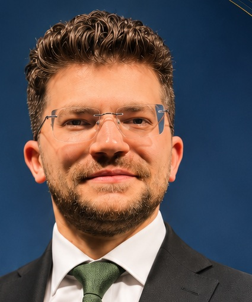

Software development
Develop structured, object-oriented software, implement application logic and translate requirements into practical features.
Java 17OOPAlgorithms
Computer Science and Engineering · Luleå University of Technology
I am currently completing the five-year MSc in Engineering programme in Computer Science and Engineering at Luleå University of Technology, Sweden. My technical interests include software architecture, computer vision, autonomous systems and distributed applications.
My coursework and projects span software development, system integration, testing, mobile and web applications, and computer architecture.

Selected areas of coursework and practical project experience.
Develop structured, object-oriented software, implement application logic and translate requirements into practical features.
Separate responsibilities, design modular components and evaluate architectural trade-offs with maintainability, extensibility and testability in mind.
Write automated unit and integration tests, investigate defects and assess whether implementations satisfy their requirements.
Project experience with Python-based computer vision, pedestrian detection, real-time tracking, distance estimation and visual perception for autonomous systems.
Work with client–server communication, TCP networking and integration between application and system components.
Hands-on coursework with Linux virtual machines, Docker Compose, K3s/Kubernetes, service routing and secure web deployment using Ingress and TLS.
Python — computer vision, distance estimation, backend APIs and web applications.
Java — object-oriented software, modular architecture and automated testing.
Swift — native iOS applications, SwiftUI, REST API integration and JSON processing.
JavaScript & TypeScript — web interfaces and Angular application development.
SQL — relational databases and database-backed applications.
Rust — compiler construction coursework.
MIPS assembly — pipelined computer architecture, interrupts and low-level programming.
C, C++ & C# — earlier programming experience listed in my technical CV.
Web & APIs: FastAPI, Flask, Angular, React (team project), REST, JSON, Swagger/OpenAPI, HTML and CSS; earlier ASP.NET experience.
Mobile: SwiftUI, Xcode, URLSession; Android system integration in team projects.
Data & AI: OpenCV, YOLOv8, RapidMiner, MySQL, PostgreSQL and earlier MATLAB experience.
Infrastructure: Docker, Docker Compose, Kubernetes/K3s, Linux, SSH, TLS, Git, GitHub, GitLab, npm, Bash and PowerShell.
Engineering: JUnit, UML, SOLID, requirements-based testing, Arduino (earlier experience), Make and LaTeX.
Experience includes university coursework, individual and team projects, and earlier technical practice.
Algorithms and data structures, databases, distributed systems, computer architecture, embedded and real-time systems, machine learning and pattern recognition, computer security, applied mathematics and control systems.
A selection of team projects and laboratory work that illustrates the technical problems I have worked with. Source repositories and demonstrations are linked where available.
Current engineering work in progress. My recent dynamic web systems coursework also covers application architecture, REST APIs, relational data and deployment. The project is ongoing.
Explored autonomous pedestrian-following in indoor and outdoor environments. The team project combined Python, OpenCV and YOLOv8 with person detection, tracking, camera-based distance estimation, navigation and communication between drone, server and mobile components.
Technical focusSoftware architecture and redesign of a networked game system, with emphasis on separating game rules, application logic and communication. The work included automated tests and evaluating maintainability and extensibility.
Technical focusNative iOS application development for a digital ordering system. Worked with Swift and SwiftUI, live baskets, receipt views, order status and backend integration using HTTP GET/POST requests, JSON decoding and periodic data refresh.
Team project integrating camera tracking, computer vision, ultra-wideband positioning and coordinate transformations using linear algebra.
Database-backed web application with a Python FastAPI backend and HTML, CSS and JavaScript frontend. Project scope included catalogue search, shopping baskets, orders and inventory management. API endpoints were tested through Swagger UI.
Worked with an Angular application, TypeScript configuration, npm tooling and a separate Python FastAPI backend project.
Team design for shared lists, membership and transactions using React, Python/Flask, PostgreSQL and JWT-based API authentication. Practical work included Docker Compose and Linux/K3s deployment setup.
Group coursework on gesture skeleton data, missing-value handling, three-dimensional joint visualization and statistical analysis of joint-position variation using RapidMiner.
Laboratory work involving Kubernetes Ingress, service communication and TLS certificate configuration for HTTPS deployment.
Laboratory work on pipelined MIPS architecture, interrupt handlers, assembly programming and the interaction between kernel and user code, using cross-assembler and linker tools.
Pipelined MIPS repository ↗
Kernel and user code repository ↗
Laboratory work involving compiler construction and formal languages using Rust.
Visit my development profiles and video channel for more material. University repositories may require institutional access.
Luleå University of Technology
Five-year engineering programme. Currently completing remaining academic requirements. My studies combine software development, computer systems, mathematics and engineering methods.
Luleå Municipality
Professional experience supporting people with mental health needs in a municipal care setting. This work has developed my communication, collaboration, responsibility and ability to respond to complex situations.
These are transferable skills I bring to technical teams: listening carefully, working systematically and taking responsibility for my work.
For software engineering opportunities, technical collaboration or thesis enquiries, please contact me by email.
Get in touch ↗Luleå, Sweden
ahmad.allahham@icloud.com
University: ahmall-0@student.ltu.se